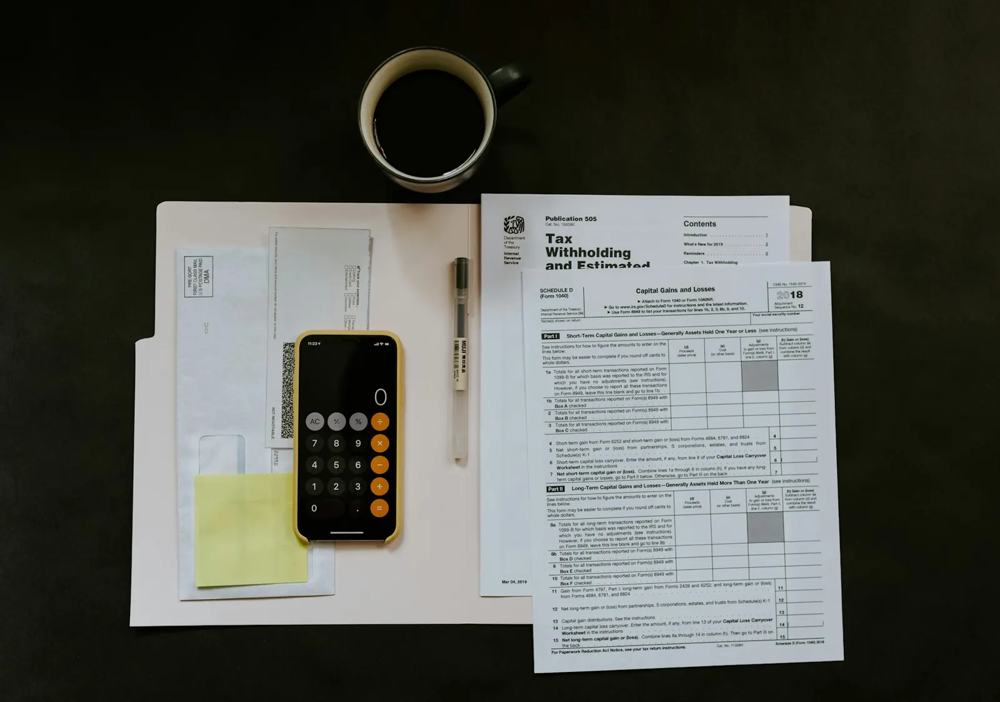
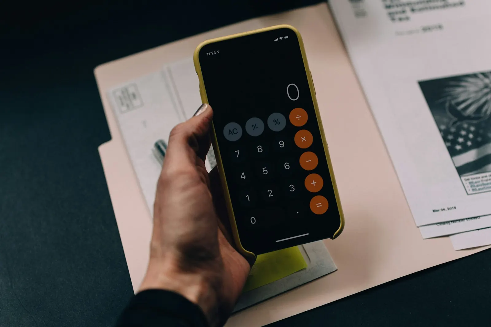
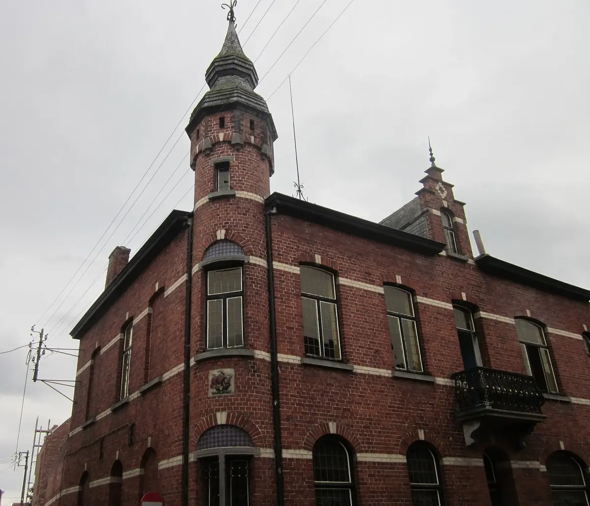
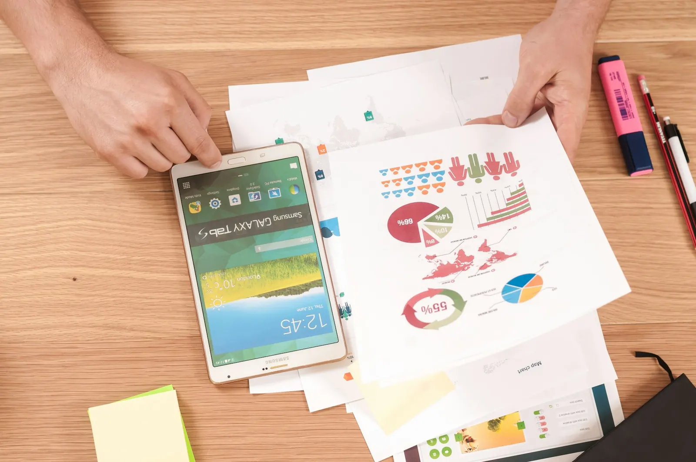
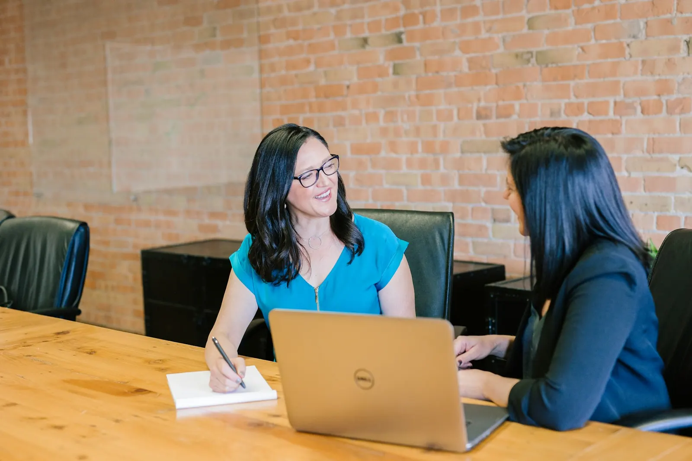
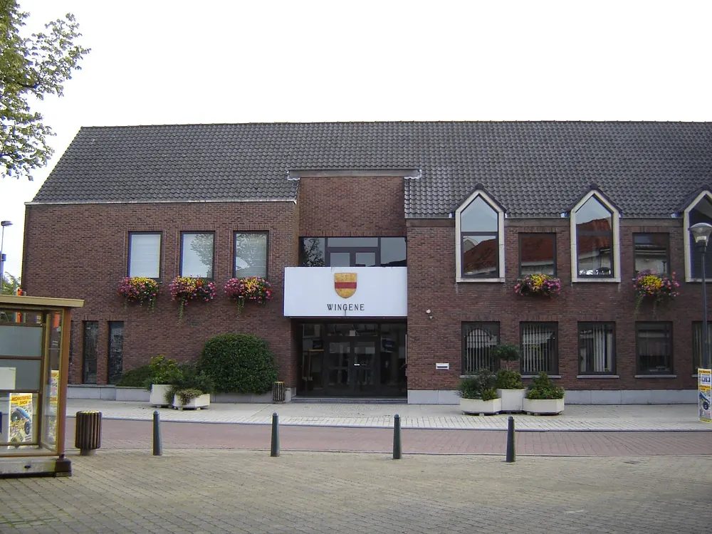
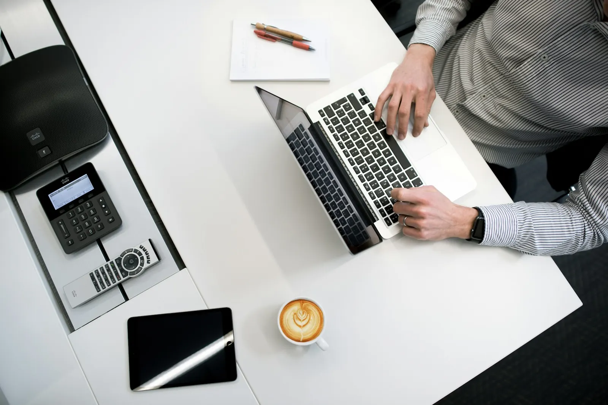
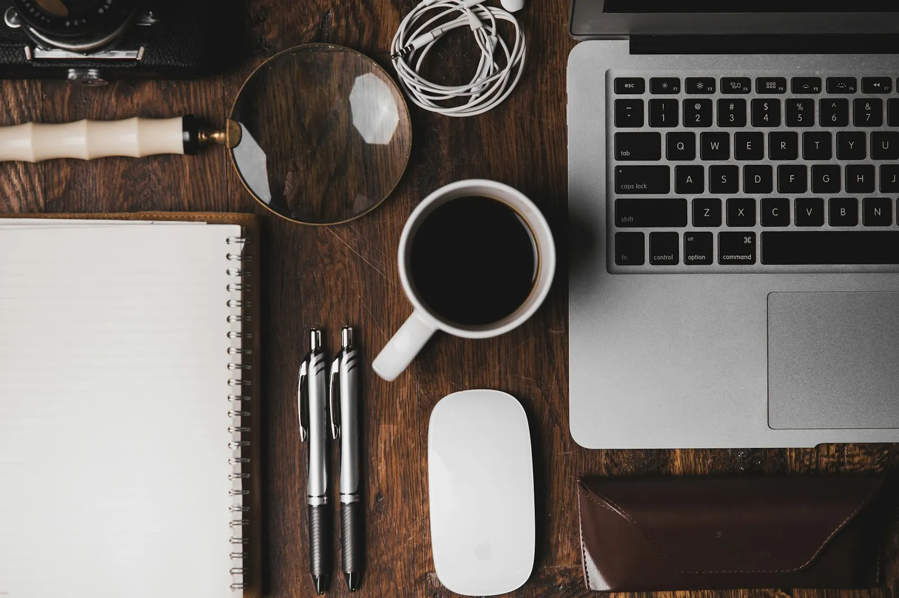
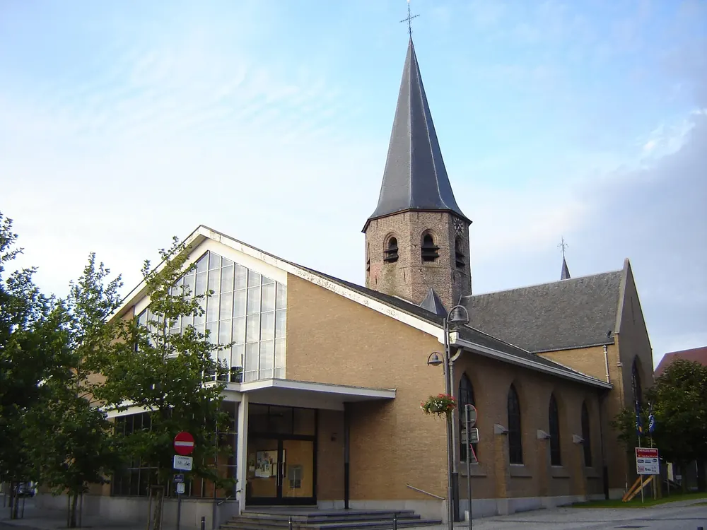
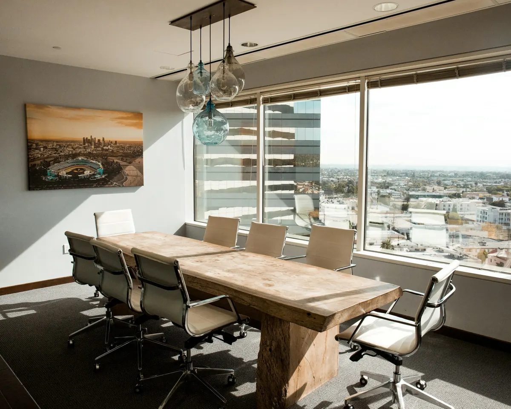

Boekhouden 01
Uw gerealiseerde droom, vertaald in cijfers.
- 1.1Facturen en uittreksels inboeken, bij u of op kantoor
- 1.2Tussentijdse resultaten
- 1.3Opmaak van de eindbalans
- 1.4Jaarverslag en jaarrekening
Accountancy Deschepper is een klein kantoor in de Boterstraat. U hebt één aanspreekpunt dat uw dossier kent, van de eerste btw-aangifte tot de jaarrekening van uw vennootschap.


Open tot 19 uur, en op zaterdagvoormiddag.
Een starter heeft andere vragen dan een kmo met personeel. Kies wat bij u past en zie meteen waarmee Brenda helpt.
Kies voor een klein kantoor waar de nadruk ligt op persoonlijk contact. Dit is wat we voor u opnemen.

Uw gerealiseerde droom, vertaald in cijfers.

De nodige aangiftes, met oog voor fiscale optimalisatie waar mogelijk.

De formaliteiten bij het opstarten en uitbouwen van uw onderneming.

Iemand die uw dossier kent en niet bij elke vraag van nul moet beginnen.
Een vraag over een factuur of een plan voor volgend jaar: u bespreekt het met dezelfde persoon.
Van starter tot kmo. Het kantoor schaalt mee met wat uw zaak nodig heeft.
Een vrijblijvend adviesgesprek over uw zaak en uw plannen.
U weet wat wij opnemen en wat we van u nodig hebben.
Stukken bezorgen, inboeken, aangiftes op tijd. Zonder stress.
Bij de jaarafsluiting bekijken we samen wat beter kan.


Brenda Deschepper vertelt hoe het boekhouden haar vak werd.

Thuis in ZwevezeleIn het laatste jaar Economie-Wiskunde richtte ik met een paar medestudenten een mini-onderneming op. Ik deed de boekhouding, en daar begon de liefde voor het vak.
Tijdens mijn stage in een accountantskantoor groeide die interesse alleen maar.
Ik ontdekte dat boekhouden en fiscaliteit pas echt boeiend worden als ze een ondernemer helpen zijn doel te bereiken.
Klein gehouden, met de ambitie om mee te groeien met de noden van uw zaak. Persoonlijk, omdat dat de beste aanpak blijft.
"Een persoonlijke aanpak is steeds de beste."

Voor ons splinternieuwe kantoor in Zwevezele. Je staat van A tot Z in voor de boekhouding van onze klanten, met maaltijdcheques en een groepsverzekering.
SolliciteerJa. Tijdens een vrijblijvend adviesgesprek legt Brenda uit wat het kantoor voor uw zaak kan betekenen. U beslist daarna in alle rust.
Het kantoor is op weekdagen open tot 19 uur en op zaterdag van 8 tot 12 uur. Handig als u overdag zelf aan het werk bent.
Zeker. We bekijken of de stap zinvol is, maken het financieel plan op en stellen de statuten op in overleg met een notaris naar uw keuze.
Dat kan, maar het hoeft niet. We boeken in bij u ter plaatse met uw eigen boekhoudprogramma of bij ons op kantoor, zoals het u het beste uitkomt.
Neem zo snel mogelijk contact op. We bereiden de controle samen voor en staan u bij tijdens de contacten met de administratie.
Boterstraat 27, 8750 Zwevezele. Bel of stuur een bericht, of laat uw gegevens na voor een vrijblijvend adviesgesprek.
| Maandag | 8u tot 19u |
| Dinsdag | 8u tot 19u |
| Woensdag | 8u tot 19u |
| Donderdag | 8u tot 19u |
| Vrijdag | 8u tot 19u |
| Zaterdag | 8u tot 12u |
| Zondag | gesloten |
Een eerste schets, op maat van Accountancy Deschepper. U kiest de stijl, ik zorg dat alles klopt.
één keer, alles inbegrepen
Geen voorschot. U betaalt pas als de site klaar is.
Hosting en domein op uw naam. Een aanpassing vraagt u per keer aan.
Hosting en domein inbegrepen. Nieuwe acties, verlofdagen en wijzigingen zet ik er voor u op.
mijn aanraderStijn Vranken · 0496 25 14 45 · info@digital-impression.be